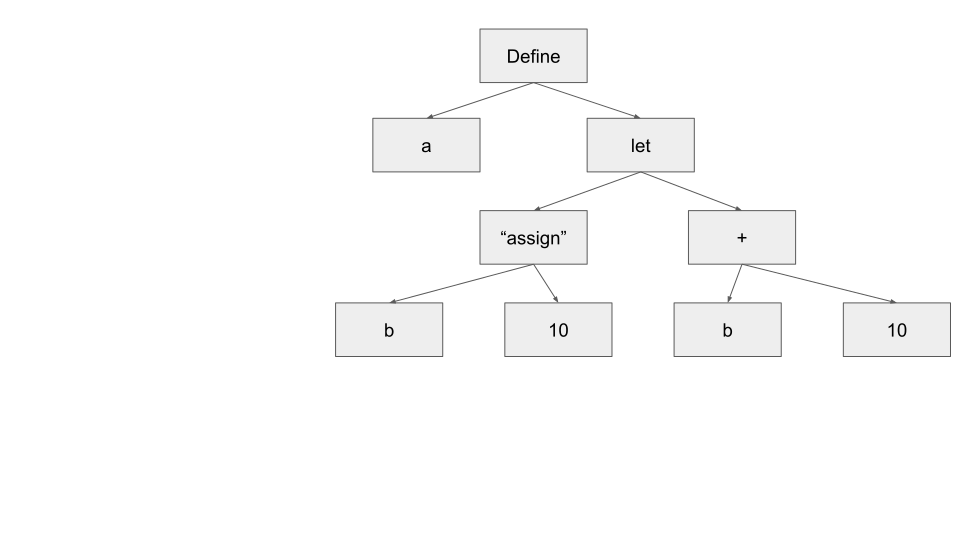

Programming languages can be split into many different axes, and you've probably heard of a couple of them. The difference that matters here is compiled vs interpreted. A compiled language is read by a compiler, which transforms your program into machine code to later be executed. An interpreter on the other hand, is a program which, very meta, runs a program in the language of choice. A common example of an interpreted language is python. If we write a program
def main():
print ("hello!")
save it into a file hello.py, and then run python hello.py in the command
line, the program python will read the lines in our program, and directly run
our program, producing the output "hello." One of the beauties of the lisp
dialects is that they're easy to build interpreters for, in fact, even though
the task may seem daunting, the introductory book Structure and Interpretation
of Computer Programs1, builds up to a very simple interpreter. I have some time
on my hands, and I wanted to learn more about interpreters, so I gave a shot at
building one.
There's roughly 3 stages to writing an interpreter:
It feels unfair to split these three as such, since the third step is by far the largest. Now that we know the names of each step, let's actually do the darn thing.
In this step we want to break down the program into the smallest syntactical elements -- that is, to the smallest elements with any meaning. We refer to these units as tokens2. Similar to the English language, our program's smallest elements are the words, and since we're talking about lisp, also parentheses. For example, if we have:
(define x a)
we want our tokenized program to be:
['define', 'x', a]
We mostly do this step to make the AST easier to build, and this step is otherwise mostly mechanical.
Now let's learn about Abstract Syntax Trees! First, let's start by looking at an example. Let's say we have the simple program:
(define a
((let b 10)
(+ b 10)))
(This is a contrived program, it doesn't do anything useful lol). We'll then have the syntax tree:
[['define', 'a', [['let', 'b', '10'], ['+', 'b', '10']]]]
Or graphically:

If you haven't given it a read, I recommend it! It's a great book. I'll explain some lisp here, but if you want to learn more I recommend giving this book a read. ↩
You might have heard about this term now with the AI craze. Tokens there are still a small sytntactical element, but they aren't necissarily a word. AIs work differently to humans and can sometimes understand things in larger chunks. ↩